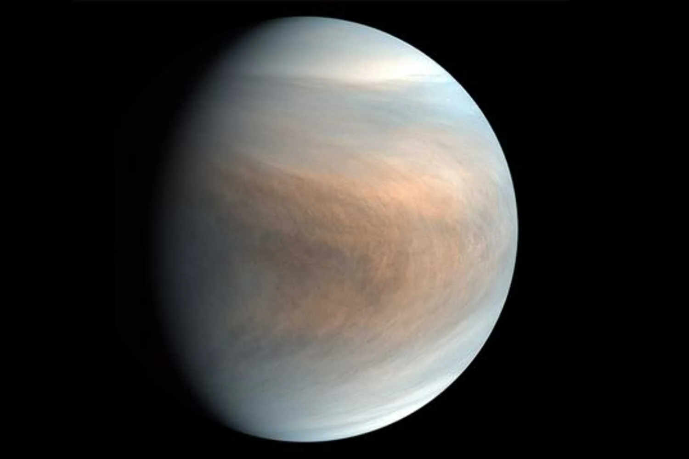
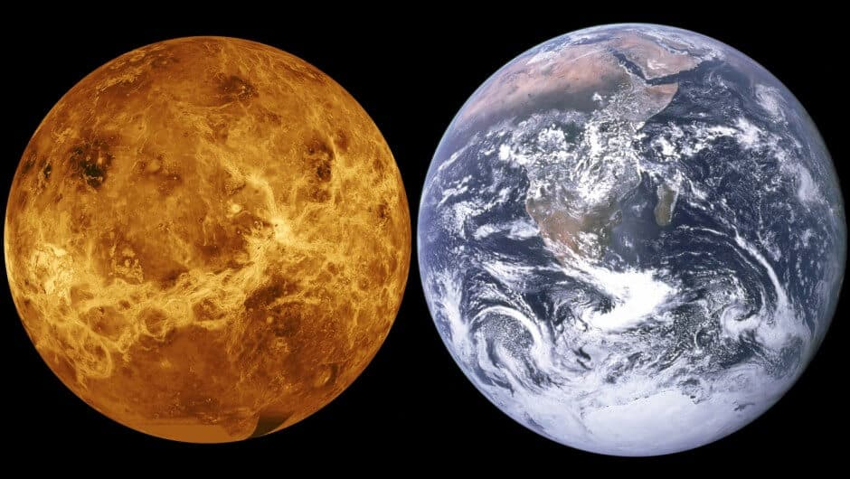

O segundo planeta do sistema solar apartir do Sol

Conhecido como irmão da Terra, por causa da semelhança de tamanhos e outras características.

Vênus é o segundo planeta mais próximo do Sol e leva cerca de 225 dias para completar uma órbita. Recebeu o nome da deusa romana do amor e da beleza e, depois da Lua, é o objeto mais brilhante do céu noturno, podendo até gerar sombras. Por estar mais próximo do Sol do que a Terra, aparece nos céus como a "Estrela da Manhã" ou a "Estrela da Tarde". É considerado o planeta "irmão" da Terra por ser semelhante em tamanho, massa e composição. No entanto, Vênus tem uma atmosfera muito densa, composta principalmente por dióxido de carbono, com nuvens de ácido sulfúrico, o que causa um efeito estufa extremo. A pressão em sua superfície é 92 vezes maior que a da Terra e sua temperatura é altíssima. Acredita-se que no passado Vênus teve oceanos, que evaporaram com o aumento da temperatura. Sem campo magnético, o planeta perdeu grande parte do hidrogênio para o espaço. Sua superfície foi mapeada nos anos 90 e mostra sinais de vulcanismo, mas quase nenhuma atividade tectônica, sugerindo uma crosta espessa e seca. Sua paisagem é jovem e pode ser renovada por eventos vulcânicos gigantescos ao longo do tempo.